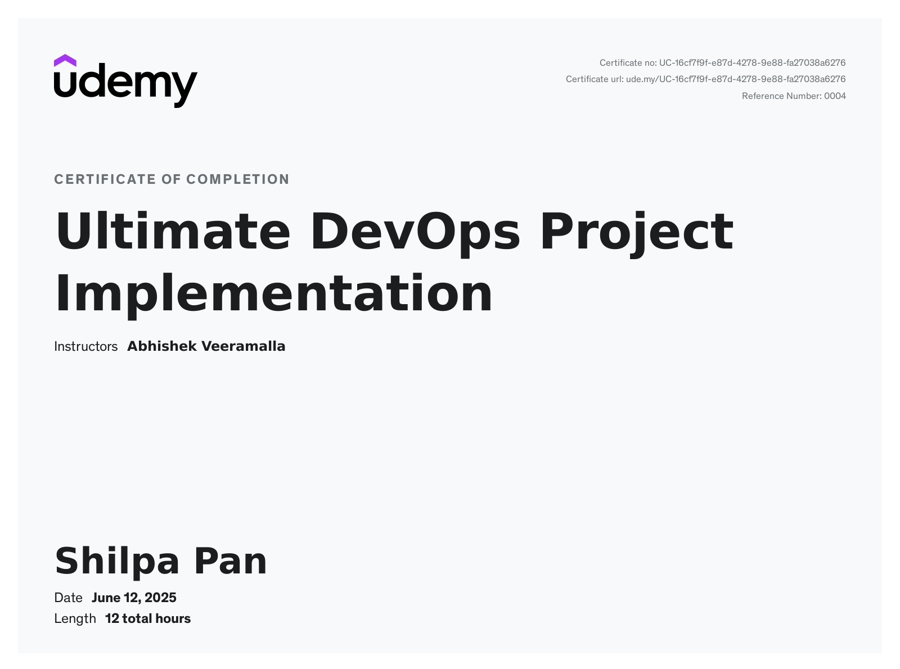
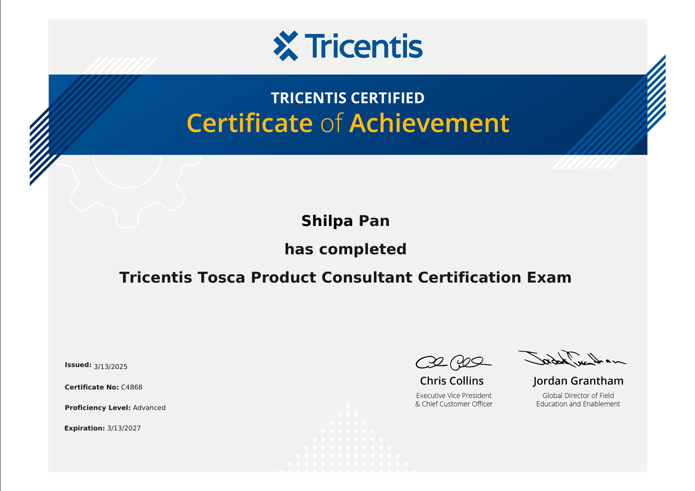
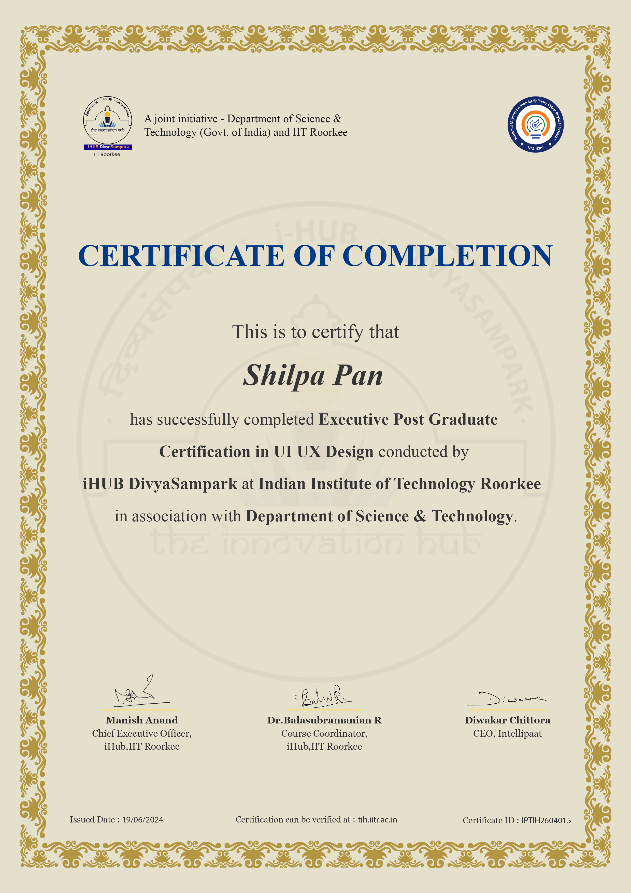

Accomplished QA professional with over 7 years of comprehensive experience in designing,
implementing, and optimizing test automation frameworks using Selenium, Java, Rest Assured,
and BDD methodologies.
Built a 3-tier application prototype in C#, Sql Server and ASP.NET, consolidating client services into
a single platform.
Expertise in managing end-to-end Software Testing Life Cycle (STLC) processes including test
planning, execution, defect management, and reporting across diverse domains and technologies.
Skilled in driving CI/CD integration of automated tests using GitHub and implementing multi
layered test strategies (functional, API, regression, and performance testing) to enhance product
quality and delivery speed.
Proven leadership capabilities, managing teams of up to 8 members, mentoring junior testers, and
fostering collaborative environments that deliver consistent project success.
Expert at client engagement and onboarding, effectively translating business requirements into
technical test cases, and influencing product enhancement decisions to boost user experience
and operational efficiency.
Highlighted ability in spearheading automation initiatives, reducing manual workloads by over
60%, and implementing reusable automation components to improve testing efficiency.
Strong communicator and problem-solver with a history of maintaining high client satisfaction and
repeat business through effective stakeholder management and quality deliverables.
Read More...
60% Reduction in Test Execution Time: Engineered optimized automation frameworks and reusable
test scripts leading to significant acceleration in test cycles.
Team Leadership: Built and led high-performing teams of 8 QA engineers, driving skill development
and consistently achieving project milestones.
Client Recognition: Invited to client onboarding meetings due to deep application knowledge;
contributed to seamless client implementation and configuration.
Automation Innovation: Designed and implemented an automation prototype for repetitive manual
tasks adopted by clients, increasing operational productivity.
Framework Enhancement: Transitioned UI-centric automation to API-based testing, resulting in
substantial reduction of script runtimes and enhanced test coverage.
Cross-functional Collaboration: Worked closely with product and development teams to influence
backlog grooming, story breakdown, and automation readiness, ensuring aligned delivery goals.
Technologies & Tools: Java, Selenium, TestNG, Cucumber, Serenity BDD, GitHub,
Rest Assured, Tosca, GitHub Actions, SauceLabs, CI/CD pipelines, Distributed Execution (DEX).
Key Responsibilites :-
Automation Framework Creation:
Spearheaded the design and implementation of Tosca-based automation frameworks from inception,
targeting web UI applications with a focus on reusability and maintainability.
Established and enforced clear naming conventions, reusable modules, and standardized development
guidelines to ensure consistency and efficiency across the framework.
Test Case Development & Execution:
Developed and executed automated test cases covering comprehensive end-to-end business scenarios
using Tosca Test Cases and Test Sheets.
Engineered reusable components such as Modules, TestSteps, and Libraries to streamline automation
efforts and eliminate redundant scripting.
Continuous Integration & Delivery (CI/CD) Enablement:
Integrated Tosca test execution seamlessly into GitHub Actions workflows, facilitating robust CI/CD
pipelines and automated testing cycles.
Utilized Distributed Execution (DEX) capabilities to execute large-scale test suites in parallel,
significantly accelerating overall test turnaround time.
Tool Adoption & Project Leadership:
Led the successful onboarding and adoption of Tosca automation tool within the team, now managing
automation strategies for two major web UI projects concurrently.
Optimized CI/CD pipelines by synchronizing Tosca automation with GitHub Actions, boosting
reliability and reducing manual intervention in test executions.
Cross-Functional Collaboration & Team Coordination:
Collaborated effectively with developers, quality assurance, and DevOps teams to refine automation
processes, improve pipeline stability, and reduce execution latency.
Directed multi-project automation initiatives ensuring extensive test coverage, timely delivery, and
alignment with organizational quality standards.
Key Responsibilites :-
Test Automation Strategy: Devised comprehensive automation strategies aligning with project
objectives, optimizing resource utilization and accelerating release cycles.
Framework Development: Architected and maintained scalable automation frameworks supporting
cross-platform testing, ensuring high-quality standards.
CI/CD Integration: Embedded automated test suites into Jenkins pipelines to facilitate continuous
testing and faster feedback loops.
Defect Management: Proactively tracked and communicated defects, collaborating with developers for
prompt resolution, minimizing production defects.
Team Leadership: Directed a pod of 5 QA engineers, overseeing task allocation, mentoring, and
performance enhancement.
API Automation: Pioneered API test automation for long-duration scenarios, optimizing execution by
isolating setup steps and validating end results.
Client Collaboration: Engaged with stakeholders to gather requirements, provide testing insights, and
recommend product improvements, enhancing client satisfaction.
Knowledge Sharing: Led training sessions on automation tools and best practices, elevating team
competency and quality output.
Growth Path :-
Team Leader (Associate) - Jun’18 – Oct’22
Programmer Analyst - Jun’19 – Dec’21
Programmer Analyst Trainee - Jun’18 – May’19
Key Responsibilites :-
Automation Leadership: Spearheaded automation initiatives using Selenium, Java, Cucumber, TestNG,
Jenkins, Rest Assured, and BDD frameworks.
Team Management: Managed a skilled team of 8 testers, driving automation adoption and quality
delivery aligned with client expectations.
Test Automation Framework: Developed a robust automation framework from ground up, facilitating
rapid test script development and execution.
Process Improvement: Identified repetitive manual tasks, built automation prototypes reducing
manual effort substantially, later integrated into production workflows.
Client Onboarding: Participated actively in client onboarding sessions, demonstrating product
capabilities and assisting in implementation configurations.
Application Development: Developed a 3-tier C# and ASP.NET prototype application consolidating
client services to streamline operations.
Test Strategy & Planning: Formulated comprehensive test strategies, ensuring full coverage through
functional, API, and performance testing.
DevOps Collaboration: Integrated test automation with DevOps pipelines for seamless CI/CD
operations and continuous delivery.
Quality Assurance: Enforced quality checkpoints including requirement, design, and test case reviews
to maintain adherence to standards.
Automation Tools: Selenium, Rest Assured, Tosca
Testing Frameworks: TestNG, JUnit, Cucumber, Serenity BDD, BDD
Programming Languages: Java, C#, JavaScript, SQL, ASP.Net, HTML, CSS, XML
API Testing Tools: Postman, SoapUI
CI/CD & DevOps Tools: GitHub Actions, Jenkins, SauceLabs, CI/CD pipelines, Distributed Execution (DEX)
Version Control: GitHub
Methodologies: Agile, Behavior Driven Development (BDD)
Soft Skills:
Leadership & Team Mentoring
Client Relationship Management
Analytical Thinking & Problem Solving
Effective Communication
Time Management & Prioritization
Adaptability & Continuous Learning
Core Competencies:
Software Testing Life Cycle (STLC)
Test Automation Strategy & Framework Design
Software Quality Assurance
Product Enhancement
API Testing and Automation
Performance and Regression Testing
Defect Lifecycle Management
Client Onboarding & Requirement Analysis
Cross-functional Team Collaboration
Certifications

Ultimate DevOps Project Implementation - Udemy
Technical Skills
Cloud Technologies - AWS
Build Tools - Gradle
Container Technologies - Docker, Kubernetes
Scripting - Shell and Python
Version Control System - Git, GitHub and Gitlab
Configuration Management - Ansible
Infrastructure as Code - Terraform
CI/CD - GitHub Actions, Jenkins and Argo CD
View Credential

Tricentis Tosca Product Consultant Certification - Tricentis
Certified in Tricentis Tosca Product Consulting, demonstrating expertise in model-based
test automation, requirements engineering, and end-to-end functional testing.
Proficient in delivering scalable, maintainable test solutions and guiding teams in
adopting Tosca for efficient QA processes.

Executive Post Graduate Certification in UI UX Design - iHUB DivyaSampark @ IIT Roorkee
Skills: User Interface (UI) Design · User Experience (UX) Design · Wireframing · Prototyping
· Usability Testing · User Research · Interaction Design · Design Thinking
· Information Architecture · Responsive Design · Accessibility Design · Figma · Agile & Scrum
· HTML/CSS.
View Credential
Get In Touch
I’m always open to new opportunities, collaborations, or answering any questions you may have. Let’s connect!
Your message has been sent successfully!
{kind=link}
{kind=link}
{kind=link}